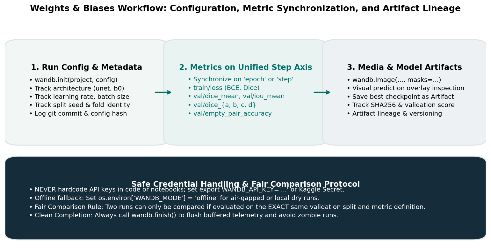

Experiment Tracking with Weights & Biases
In machine learning research and Kaggle competitions, raw intuition is not enough. You will iterate across multiple model architectures (U-Net, FPN, DeepLabV3+), test diverse loss functions (BCE, Dice, Focal), evaluate different learning rate schedules, and sweep decision thresholds.
If you track these experiments using terminal printouts, text files, or manual spreadsheets, critical details will inevitably slip through the cracks: Which learning rate produced that 0.65 Dice score? Did that checkpoint use horizontal flips? What did the predicted masks look like when recall collapsed on defect_b?
Weights & Biases (W&B) provides an experiment tracking platform that automatically records configurations, synchronizes training and validation metrics, archives model checkpoints as versioned artifacts, and renders interactive qualitative segmentation overlays.
This guide teaches the complete lifecycle of a W&B tracking workflow, emphasizes step alignment and fair comparisons, and details safe credential handling.
1. Motivation: The Experiment Tracking Lifecycle
A deep learning experiment is more than just final validation numbers. It is a reproducible record consisting of:
- Inputs: Code version (git commit), dataset partition hash, hyperparameters, random seeds.
- Process: Training dynamics, loss curves, gradient norms, learning rate decay.
- Outputs: Quantitative validation metrics (per-class Dice, IoU, empty-image accuracy), qualitative mask overlays, and saved model weights.
┌─────────────────────────────────────────────────────────────────────────────┐
│ The W&B Run Cycle │
├─────────────────────┬───────────────────────────┬───────────────────────────┤
│ 1. Initialize │ 2. Log Epoch │ 3. Finalize │
│ wandb.init(...) │ wandb.log({metrics}) │ wandb.finish() │
├─────────────────────┼───────────────────────────┼───────────────────────────┤
│ • Model config │ • Train loss (BCE, Dice) │ • Log best model artifact │
│ • Hyperparameters │ • Val Dice & IoU per-class│ • Record run summary │
│ • Split seed & fold │ • Qualitative mask images │ • Flush telemetry buffer │
└─────────────────────┴───────────────────────────┴───────────────────────────┘
Figure 5.1: Weights & Biases run lifecycle: configuration logging, synchronized metric tracking, qualitative mask overlay inspection, and versioned model artifact storage.2. Safe Credential Handling: Never Hardcode API Keys
When setting up W&B, students frequently make a critical security mistake: pasting their raw W&B API key directly into Python scripts or Jupyter notebooks:
# CRITICAL SECURITY VULNERABILITY - NEVER DO THIS!
wandb.login(key="d83f98234a...") # If committed to git or shared, your account is exposed!The Three Safe Credential Protocols:
Protocol 1: Environment Variables (Recommended for Local Machines)
Set your API key in your terminal shell environment before executing Python:
export WANDB_API_KEY="your_private_api_key_here"
uv run python src/train.pywandb.init() will automatically detect the environment variable without any key appearing in your code.
Protocol 2: Kaggle Secrets (Recommended for Cloud Notebooks)
In Kaggle Notebooks:
- Navigate to Add-ons \(\to\) Secrets.
- Add a new secret with Label
WANDB_API_KEYand your key as the Value. - In your notebook initialization cell:
from kaggle_secrets import UserSecretsClient import wandb user_secrets = UserSecretsClient() wandb_api_key = user_secrets.get_secret("WANDB_API_KEY") wandb.login(key=wandb_api_key)
Protocol 3: Offline Mode (Recommended for Air-Gapped or Quick Smoke Tests)
If you are developing offline or running quick 1-epoch sanity checks, disable network communication entirely:
export WANDB_MODE="offline"
# Or inside Python:
os.environ["WANDB_MODE"] = "offline"wandb/ folder on disk without attempting to contact external servers. You can later sync offline runs using wandb sync wandb/offline-run-....
3. Configuration & Metadata Logging
Before training begins, log every hyperparameter and environment variable required to reproduce the run.
import wandb
config = {
# Architecture
"architecture": "unet",
"encoder_backbone": "resnet34",
"encoder_weights": "imagenet",
"in_channels": 1,
"num_classes": 4,
"head_type": "sigmoid", # or "softmax"
# Optimization
"epochs": 15,
"batch_size": 8,
"learning_rate": 1e-3,
"weight_decay": 1e-4,
"lr_scheduler": "cosine",
"loss_function": "bce_dice_combo",
# Dataset & Partition
"image_shape": [128, 800],
"train_split_ratio": 0.8,
"split_seed": 42,
"data_version": "v1.0_clean",
}
run = wandb.init(
project="industrial-surface-anomaly-segmentation",
name="unet-resnet34-baseline-fold0",
config=config,
notes="Initial baseline training with BCE+Dice loss on combination-stratified holdout.",
tags=["baseline", "unet", "fold0"],
)4. Metric Synchronization: The Step Axis Trap
A frequent source of broken, unreadable W&B dashboards is mismatched step axes.
By default, every call to wandb.log(...) increments an internal integer counter called _step. If you log batch-level training losses inside your inner loop and epoch-level validation metrics in your outer loop:
- Batch training losses are logged at steps \(1, 2, 3, \dots, 500\).
- Validation metrics are logged at step \(501\) (labeled epoch 1).
- Subsequent batch losses resume at steps \(502, \dots, 1000\).
The resulting W&B charts become jagged, discontinuous, or out-of-sync.
The Correct Pattern: Explicit Step Synchronization
Define an explicit step axis—typically epoch—or log a consolidated metric dictionary at the end of each epoch:
for epoch in range(1, num_epochs + 1):
train_loss, train_bce, train_dice = train_one_epoch(model, train_loader, optimizer, criterion)
val_loss, val_dice_mean, val_dice_per_class = validate_one_epoch(model, val_loader, criterion)
# Log everything together with an explicit step parameter
wandb.log({
"epoch": epoch,
"train/loss_total": train_loss,
"train/loss_bce": train_bce,
"train/loss_dice": train_dice,
"val/loss_total": val_loss,
"val/dice_mean": val_dice_mean,
"val/dice_defect_a": val_dice_per_class[0],
"val/dice_defect_b": val_dice_per_class[1],
"val/dice_defect_c": val_dice_per_class[2],
"val/dice_defect_d": val_dice_per_class[3],
"learning_rate": optimizer.param_groups[0]["lr"],
}, step=epoch)Using namespaced prefixes (like train/ and val/) groups related curves into clean panels in the W&B web interface.
5. Visualizing Predictions: Segmentation Mask Overlays
Numbers and loss curves only tell part of the story. A model might achieve a high mean Dice score solely by predicting empty masks on clean images, while failing to detect subtle defects.
W&B natively supports interactive segmentation overlays using wandb.Image:
def log_validation_mask_predictions(model, val_loader, epoch, device, max_samples=4):
model.eval()
images_to_log = []
class_labels = {
0: "background",
1: "defect_a",
2: "defect_b",
3: "defect_c",
4: "defect_d"
}
with torch.no_grad():
for batch in val_loader:
imgs = batch["image"].to(device)
masks = batch["mask"].cpu().numpy() # Ground truth [B, 4, 128, 800]
logits = model(imgs)
probs = torch.sigmoid(logits).cpu().numpy() # Predicted [B, 4, 128, 800]
for i in range(min(len(imgs), max_samples)):
# Convert normalized grayscale tensor back to [0, 255] uint8 for display
raw_img = (imgs[i, 0].cpu().numpy() * 0.25 + 0.5) * 255.0
raw_img = np.clip(raw_img, 0, 255).astype(np.uint8)
# Create discrete 2D map for GT and Prediction (channel index 1..4)
gt_2d = np.zeros((128, 800), dtype=np.uint8)
for c in range(4):
gt_2d[masks[i, c] > 0.5] = c + 1
pred_2d = np.zeros((128, 800), dtype=np.uint8)
for c in range(4):
pred_2d[probs[i, c] >= 0.5] = c + 1
# Assemble W&B Image with mask overlay
wb_img = wandb.Image(
raw_img,
masks={
"ground_truth": {"mask_data": gt_2d, "class_labels": class_labels},
"prediction": {"mask_data": pred_2d, "class_labels": class_labels},
},
caption=f"Sample {batch['image_id'][i]} (Epoch {epoch})"
)
images_to_log.append(wb_img)
break # Only log first batch
wandb.log({"val/qualitative_masks": images_to_log}, step=epoch)In the W&B UI, this allows you to toggle ground truth vs. predicted masks, adjust transparency, and inspect exactly how predictions evolve from epoch 1 to epoch 15.
6. Model Artifacts: Saving Checkpoints with Lineage
Rather than saving untracked .pt files to arbitrary local directories, log your best checkpoints as W&B Artifacts:
def save_model_artifact(checkpoint_path: str, model_name: str, val_score: float, epoch: int):
artifact = wandb.Artifact(
name=f"{model_name}-best",
type="model",
description=f"Best model checkpoint at epoch {epoch} with Val Dice {val_score:.4f}",
metadata={"val_dice": val_score, "epoch": epoch}
)
# Add checkpoint file
artifact.add_file(checkpoint_path)
# Log and track version in W&B
wandb.log_artifact(artifact)Advantages:
- Checkpoints are cryptographically hashed (SHA256) and versioned (
v0,v1,v2,latest). - Every model checkpoint is linked directly to the training run, git commit, and hyperparameters that produced it.
- Downstream inference scripts can download the exact winning checkpoint directly using
run.use_artifact(...).
7. The Fair Comparison Protocol
When comparing two runs in W&B (e.g., Run A: U-Net ResNet34 vs. Run B: U-Net EfficientNet-B0):
FAIR COMPARISON PROTOCOL
┌───────────────────────────────────────┬───────────────────────────────────────┐
│ PERMITTED │ FORBIDDEN │
├───────────────────────────────────────┼───────────────────────────────────────┤
│ • Different model architecture │ • Different validation split IDs │
│ • Different learning rate / optimizer │ • Different metric formulas │
│ • Different loss weightings │ • Different image normalization │
│ • Different augmentation strengths │ • Comparing local smoke to full fold │
└───────────────────────────────────────┴───────────────────────────────────────┘If Run A evaluated on a random split with 15 instances of defect_b, while Run B evaluated on a split with 40 instances of defect_b, their validation scores cannot be compared. Only runs evaluated on the exact same combination-stratified partition provide an honest scientific comparison.
8. Common Mistakes and Diagnostics
| Bug / Failure Mode | Root Cause | Observable Symptom | Practical Diagnostic |
|---|---|---|---|
| Leaked Credentials | Hardcoding wandb.login(key="...") in scripts. |
Security alert or compromised account. | Check code for raw strings; use os.environ["WANDB_API_KEY"]. |
| Sawtooth Metric Charts | Logging train metrics and val metrics on unsynchronized steps. | Charts jump back and forth along the x-axis. | Pass explicit step=epoch to every wandb.log(...) call. |
| Zombie / Hanging Runs | Forgetting to call wandb.finish() before script exits. |
Run appears active indefinitely on dashboard. | Place wandb.finish() in a try...finally block. |
| Network Timeout on Save | Uploading 500 MB model artifacts over slow internet. | Script freezes at end of training. | Save checkpoint locally first; upload asynchronously or save only best.pt. |
| Excessive Media Logging | Logging 100+ images on every batch. | Disk fills up; dashboard slows to a crawl. | Restrict qualitative image logging to 4–8 fixed canaries per epoch. |
9. Try It: Simulate an Offline W&B Tracking Loop
Run this self-contained script to verify that W&B logs configuration, metrics, and summaries in offline mode without requiring internet access or credentials:
import os
import wandb
# 1. Force offline mode
os.environ["WANDB_MODE"] = "offline"
# 2. Initialize tracking run
run = wandb.init(
project="milestone2-diagnostic",
name="synthetic-offline-test",
config={"lr": 1e-3, "batch_size": 8, "architecture": "toy-unet"}
)
# 3. Simulate 3 training epochs
for ep in range(1, 4):
simulated_train_loss = 0.8 / ep
simulated_val_dice = 0.5 + 0.1 * ep
wandb.log({
"epoch": ep,
"train/loss": simulated_train_loss,
"val/dice_mean": simulated_val_dice,
}, step=ep)
# 4. Finalize run
wandb.finish()
print("✓ Offline W&B tracking loop executed and finalized successfully!")10. Authoritative Documentation & References
- W&B Quickstart: Weights & Biases Python Quickstart
- W&B Image & Mask Logging: Logging Media: Segmentation Masks
- W&B Artifacts & Model Versioning: Model Registry & Artifacts